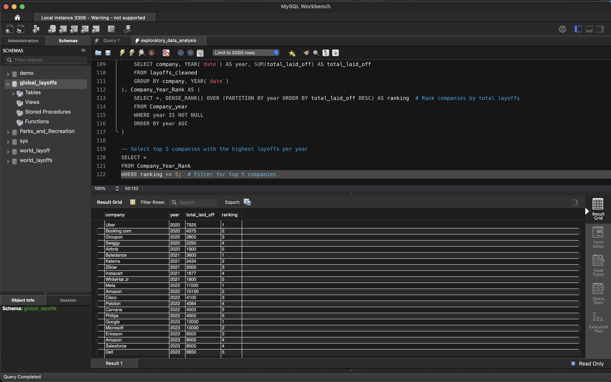

Exploratory Data Analysis -
World Layoff Data
Data Set: Press Here
GitHub File: Press Here
Overview:
This project focuses on exploratory data analysis of layoff data using SQL. The aim is to identify trends and insights regarding layoffs across various companies and industries. The project utilises various SQL techniques for data manipulation, analysis, and reporting, providing valuable insights into workforce reductions.
Key Skills Used:
• Data Analysis: Querying and manipulating data using SELECT, GROUP BY, and ORDER BY statements
• Data Transformation: Using ALTER TABLE and data type conversion
• Trend Analysis: Identifying trends over time with ROLLING TOTALS and aggregation functions
Dataset Description:
The dataset consists of layoff data with fields such as company, location, industry, total laid-off employees, and percentage laid off. It contains various inconsistencies and requires transformation for effective analysis.
Why This Project is Worth Doing:
• Exploratory Data Analysis (EDA) helps uncover insights, patterns, and trends in the data, guiding further analysis and decision-making.
• It highlights the importance of understanding data structure and quality before proceeding to modeling or formal statistical analysis.
• The project highlights the importance of clean, structured data for accurate analysis.
Step-by-Step Guide for Exploratory Data Analysis:
- Selecting All Records:
SELECT * FROM layoffs_cleaned; - Convert Columns to Appropriate Data Types:
ALTER TABLE layoffs_cleaned MODIFY COLUMN total_laid_off INT; - Retrieve Maximum Values:
SELECT MAX(total_laid_off), MAX(percentage_laid_off) FROM layoffs_cleaned; - Identify Companies with 100% Layoffs:
SELECT * FROM layoffs_cleaned WHERE percentage_laid_off = 1 ORDER BY total_laid_off DESC; - Group Total Layoffs by Company:
SELECT company, SUM(total_laid_off) AS total_laid_off FROM layoffs_cleaned GROUP BY company ORDER BY total_laid_off DESC; - Group Total Layoffs by Industry:
SELECT industry, SUM(total_laid_off) AS total_laid_off FROM layoffs_cleaned GROUP BY industry ORDER BY total_laid_off DESC; - Group Total Layoffs by Year:
SELECT YEAR(`date`) AS year, SUM(total_laid_off) AS total_laid_off FROM layoffs_cleaned GROUP BY YEAR(`date`) ORDER BY year DESC; - Analysing Monthly Layoffs:
SELECT SUBSTRING(`date`, 1, 7) AS `month`, SUM(total_laid_off) AS total_laid_off FROM layoffs_cleaned GROUP BY `month` ORDER BY `month`; - CTE for Rolling Totals:
WITH Rolling_Total AS (SELECT SUBSTRING(`date`, 1, 7) AS `month`, SUM(total_laid_off) AS total_off FROM layoffs_cleaned GROUP BY `month`) SELECT `month`, total_off, SUM(total_off) OVER (ORDER BY `month`) AS rolling_total FROM Rolling_Total; - Selecting Top 5 Companies with Highest Layoffs per Year:
WITH Company_year AS (SELECT company, YEAR(`date`) AS year, SUM(total_laid_off) AS total_laid_off FROM layoffs_cleaned GROUP BY company, YEAR(`date`)) SELECT * FROM Company_year WHERE ranking <= 5;

CONCLUDING REMARKS
This project is an extension to the layoff data cleaning project in SQL. Completing this exploratory data analysis project deepened my understanding of using SQL for identifying patterns and trends in datasets. Through working with real-world data, I strengthened my ability to extract insights using aggregation functions, GROUP BY, and CTEs for rolling totals. This project also emphasised the importance of clean data, as it laid the foundation for reliable analysis. The skills I’ve developed in structuring and analysing data with SQL will help guide future data-driven decisions and more advanced analysis techniques.